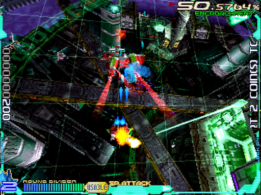
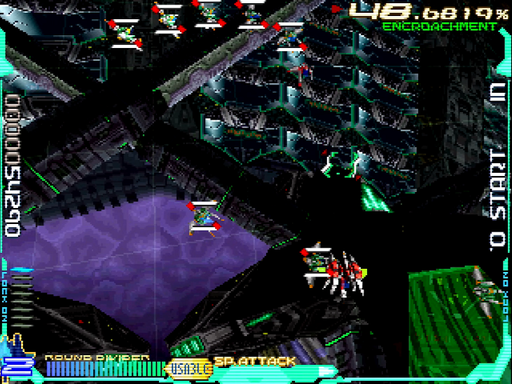
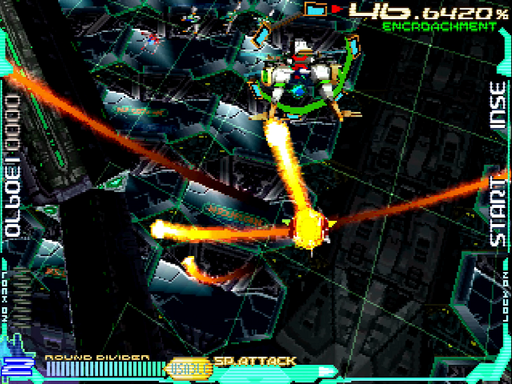
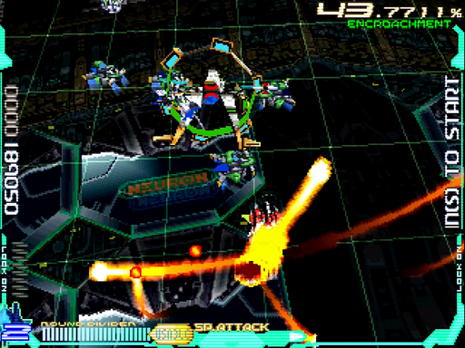
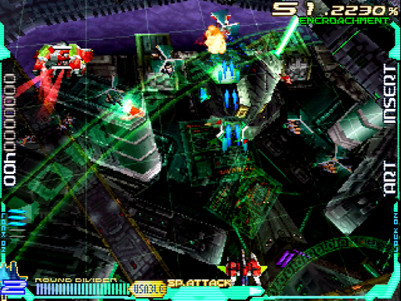
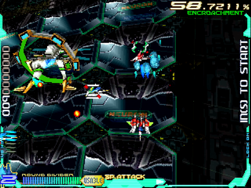
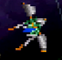

自我領域(Self Part)/ホストエリア
最初のエリアです。小手調べというか準備段階な感じで、非常におとなしい難易度になっています。
しかし、侵食率の調整はこの時点で始まっています。動きをきっちりパターン化しましょう。
通常パターン
WR-01R
開幕で自機を画面中央左に寄せます。すると、アイテムキャリアー1は後ろ右から出てきます。ショットを当ててキャリアー部分を壊しつつ、本体をフルロック。画像の辺りでハイパーレーザー。スライドしてきたE512もろとも、爆風に巻き込んで倒します。これは非常によく使うテクニックなので、ぜひマスターしたいところ。
右の3機を普通に処理してアイテムを取ったら、E303×6機×2セットをさばきます。後から来た2機を使って、素点の高い赤機体を最後に回すのがミソ。
残った4機も、続けてやってくるM214のハイパーレーザーで美味しくいただきましょう。アイテムキャリアー1と同じ要領で、右側に出すと成功しやすいです。
最後にM214をもう1機左側から出現させ、E125、E096ごとハイパーレーザー。自機を中央に陣取らせ、敵をなるべく爆風に巻き込むように。
クリア時に30万点ぐらいが目安です。1号機のハイパーレーザーは着弾までのタイムラグがあるため、それを加味して動くよう心がけましょう。
WR-02R
基本的には1号機と変わりません。狙えるところでハイパーレーザーを使って、爆風に巻き込みます。
違いを挙げるなら、ハイパーレーザーの着弾が速い点と、ロックオンパワーアップアイテムを取らない点でしょうか。
ランク調整パターン
WR-01R
アイテムを落とす敵以外逃がします。アイテムキャリアー1も、キャリアー部分を壊すにとどめましょう。E512は、単発ショットを差し込んで倒します。
E303は急角度でスクロールしていくため、逃がしたり激突する事もあります。いっそ逃がしても構いません。M214が撃ってくる自機狙いへの対処も怠りなく。
WR-02R
こちらも、1号機とおおむね同じです。2号機のショットは細い直線状なので、より精密に当て、倒した事をきちんと確認しましょう。
1.攻略本だと名前は「Lexicon φ2」ですが、別の敵(M44b)と全く同名という指摘もあるのでちょっと疑わしいです。本書では、単に「アイテムキャリアー」とします ↩
2. E51「α Morphemes」 ↩
3. E30「ο Morphemes」 ↩
4.M21「Lexicon K9」 ↩
5.E12「ι Morphemes」 ↩
6.E09「θ Morphemes」 ↩